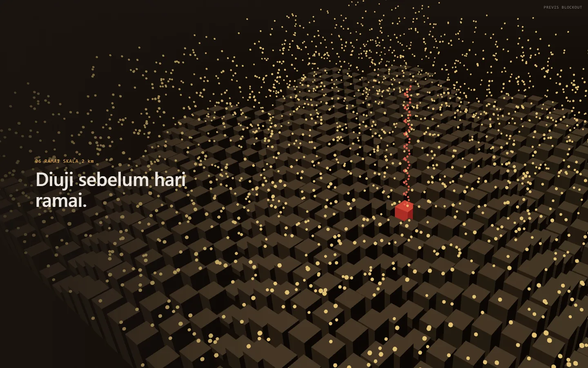
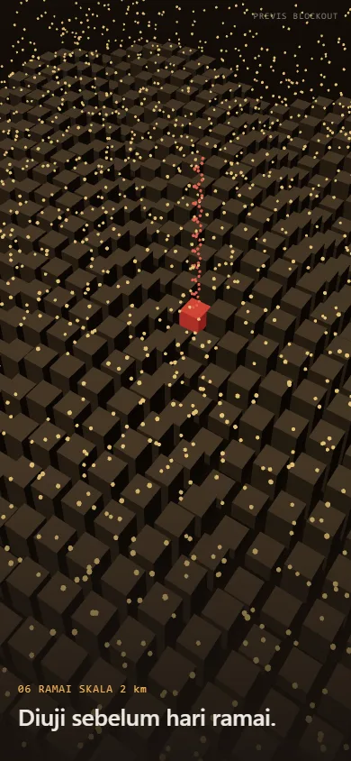
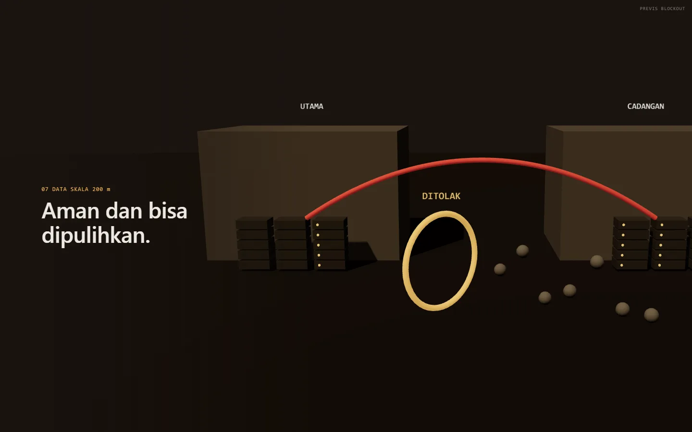
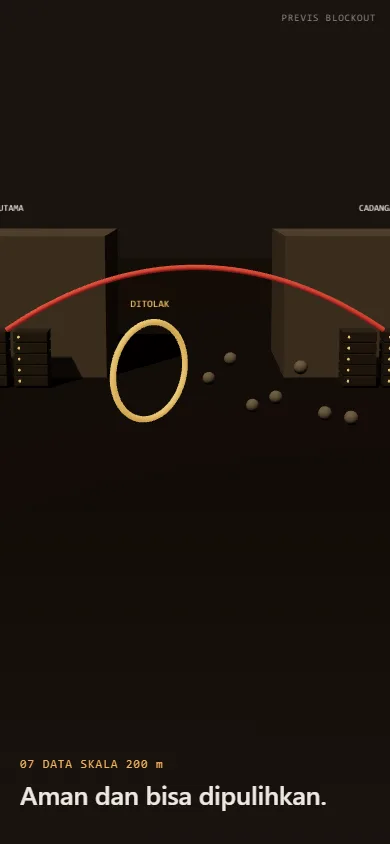
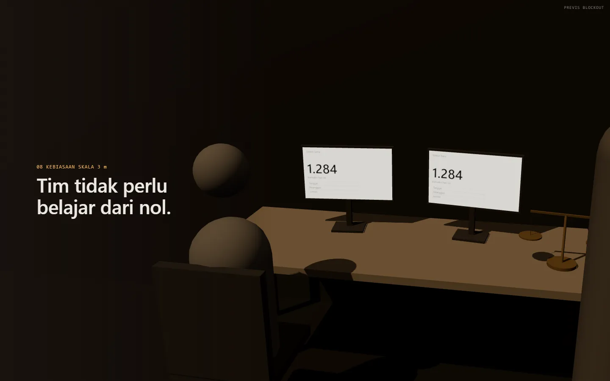
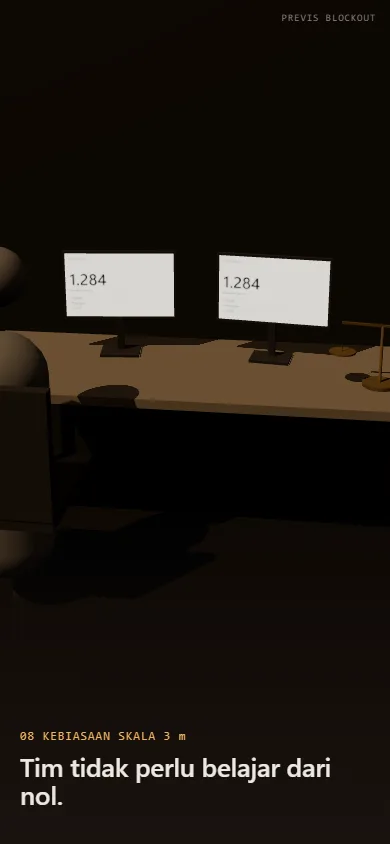
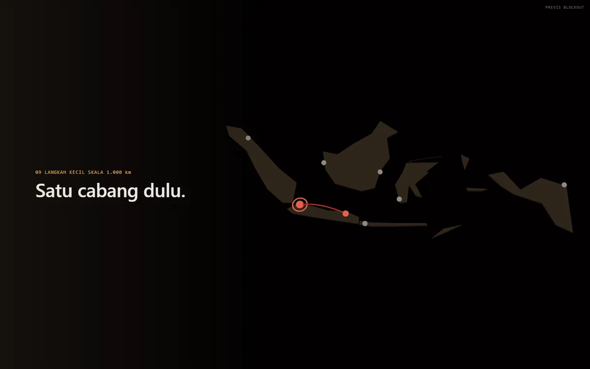
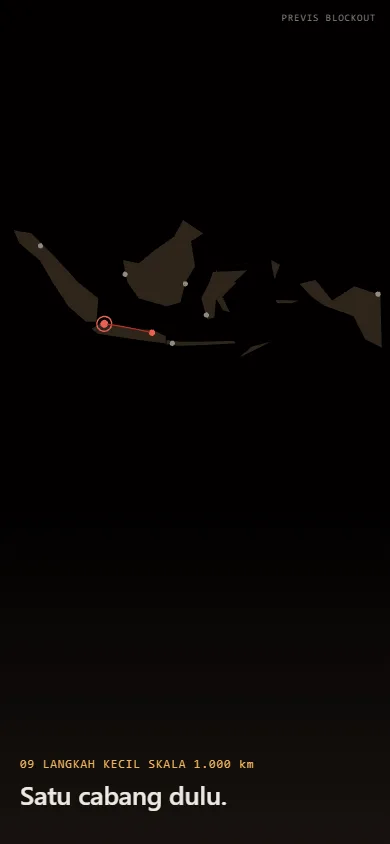
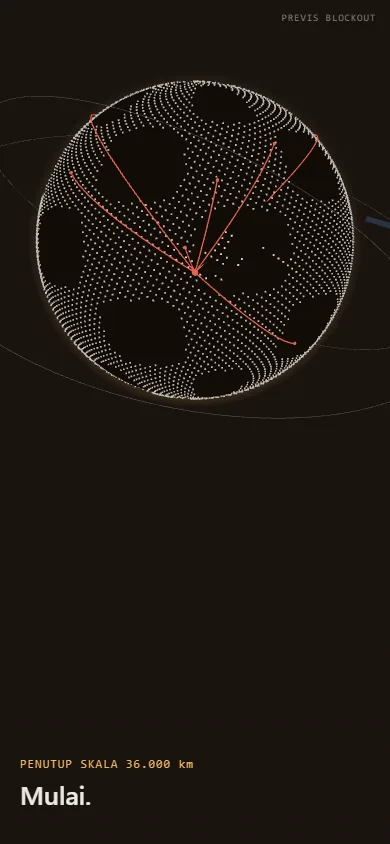

CERITA V5, ARAH G, PREVIS BLOCKOUT, BAGIAN 2 DARI 2
Yang ditimbang sebelum memutuskan
Render dari adegan blockout three.js (previs.html), kiri desktop 1440x900, kanan HP 390x844. Objek persisten: nota merah di atas timbangan; di skala kota ke atas, nota jadi titik data merah. Antarbabak memakai camera blend dan motion blur seperti sekarang. Benda masih abu-abu polos; bahan dan cahaya akhir ditentukan lewat look-dev sesudah papan ini disetujui.


06 RAMAI, SKALA 2 km
Diuji sebelum hari ramai.
- KEJADIAN
- Tanggal gajian. Kamera naik dari toko ke atas kota, ribuan titik transaksi naik dari blok-blok. Blok klien tetap menyala, antreannya mengalir.
- BENDA
- Blok kota, medan titik transaksi, satu blok klien merah.
- KAMERA
- Crane naik dari atap ke ketinggian kota, menunduk 55 derajat.
- PEMICU
- Titik naik makin rapat seiring gulir.
- PIN
- 1,5 layar
- POLA BANK
- 56 instanced field, 35 zoom parallax
- BUKTI
- PPDB 2024 dan tiket Lebaran KAI 2025 tumbang saat ramai (P). Uji beban dikonfirmasi Farrez.


07 DATA, SKALA 200 m
Aman dan bisa dipulihkan.
- KEJADIAN
- Permintaan asing ditolak di gerbang. Lalu satu server padam; salinan dari gedung lain mengalir balik lewat garis merah, sistem hidup lagi.
- BENDA
- Dua gedung dengan rak server, perisai di gerbang, garis cadangan.
- KAMERA
- Menyamping, dari gedung utama ke gedung cadangan.
- PEMICU
- Server padam di tengah babak, pulih di akhir babak.
- PIN
- 1,5 layar
- POLA BANK
- 53 camera path
- BUKTI
- PDN 2024: hanya 2% data ter-backup (P); CPA Australia: 49% usaha kecil Indonesia rugi akibat serangan siber 2025 (D). Latihan pulih dikonfirmasi Farrez.


08 KEBIASAAN, SKALA 3 m
Tim tidak perlu belajar dari nol.
- KEJADIAN
- Hari pertama karyawan baru. Dua monitor berdampingan: sistem lama dan baru, angkanya sama. Formulir baru mengikuti urutan formulir lama.
- BENDA
- Meja kasir atau admin, dua monitor, dua orang.
- KAMERA
- Dari belakang bahu, setinggi mata.
- PEMICU
- Angka di dua monitor berubah bersamaan.
- PIN
- 1,0 layar
- POLA BANK
- 39 rack focus
- BUKTI
- Coretax 2025 akhirnya jalan berdampingan dengan sistem lama (D, DJP).


09 LANGKAH KECIL, SKALA 1.000 km
Satu cabang dulu.
- KEJADIAN
- Peta Nusantara gelap. Satu cabang menyala lebih dulu, beberapa babak kemudian cabang lain menyusul dan tersambung.
- BENDA
- Pulau-pulau datar, titik cabang, garis sambungan.
- KAMERA
- Terbang naik dari kota sampai pulau, tegak lurus.
- PEMICU
- Cabang menyala bergiliran.
- PIN
- 1,2 layar
- POLA BANK
- 36 portal zoom-through
- BUKTI
- Titik cabang diisi lokasi klien nyata bila diizinkan.


PENUTUP, SKALA 36.000 km
Mulai.
- KEJADIAN
- Kamera terus naik sampai orbit. Globe dengan garis dari Indonesia, satelit lewat. Lalu turun ke rak bukti proyek.
- BENDA
- Globe titik, garis sambungan, dua satelit.
- KAMERA
- Zoom out penuh, globe berputar pelan.
- PEMICU
- Satelit melintas di akhir gulir.
- PIN
- 1,5 layar
- POLA BANK
- 55 persistent object, globe ala GitHub
- BUKTI
- Garis globe hanya ke tempat yang memang ada pengguna atau kliennya.